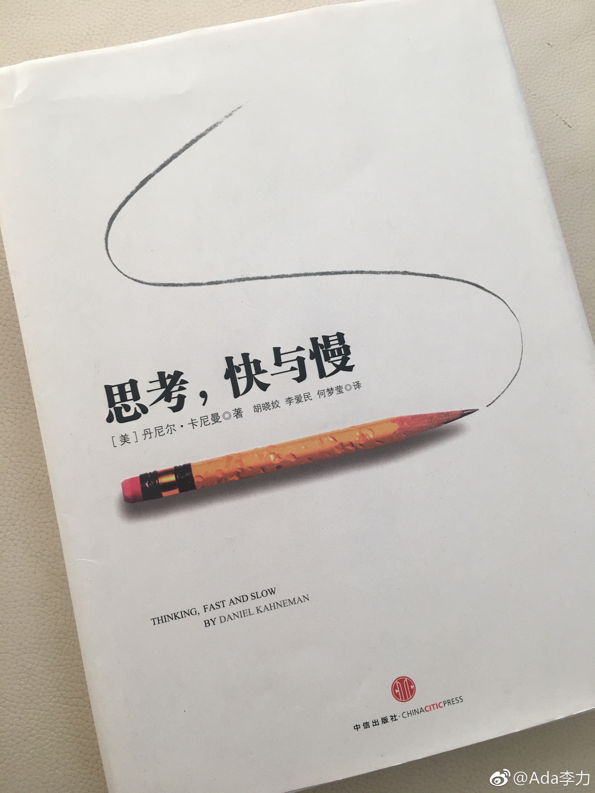

#读书# 《思考，快与慢》这本书买很久了，记忆中我是看过的，但这次重读之后，发现这本书我完全没看过。大概之前我只看完了第一章，就想当然地认为了解了，不就是人有两个系统么，系统1感性，系统2理性。很多国外作者的书，其实一句话就能概括全书。我以为这本书也是这样。
实际上，这本书读得极其缓慢，即使我想加快阅读速度也不行，内容实在庞杂，每一段信息量都很大。断续用了两周时间才读完。
这本书提供了很多别具一格的实验，数据和发现，并没有正确结论这种说法，只是会让你认识到：原来还有这一面，没想到；原来人们是这么无意识地矛盾着，有意思…
我想自己之前没读完的缘故，一个是这本书读起来确实不轻松，另外一个就是语言很晦涩，作者喜欢用否定之否定的句式来表明肯定的意思。
不过庆幸我重读了，对待读过的书，我要么是束之高阁，要么就是卖掉了。
实际上，这本书读得极其缓慢，即使我想加快阅读速度也不行，内容实在庞杂，每一段信息量都很大。断续用了两周时间才读完。
这本书提供了很多别具一格的实验，数据和发现，并没有正确结论这种说法，只是会让你认识到：原来还有这一面，没想到；原来人们是这么无意识地矛盾着，有意思…
我想自己之前没读完的缘故，一个是这本书读起来确实不轻松，另外一个就是语言很晦涩，作者喜欢用否定之否定的句式来表明肯定的意思。
不过庆幸我重读了，对待读过的书，我要么是束之高阁，要么就是卖掉了。
- 